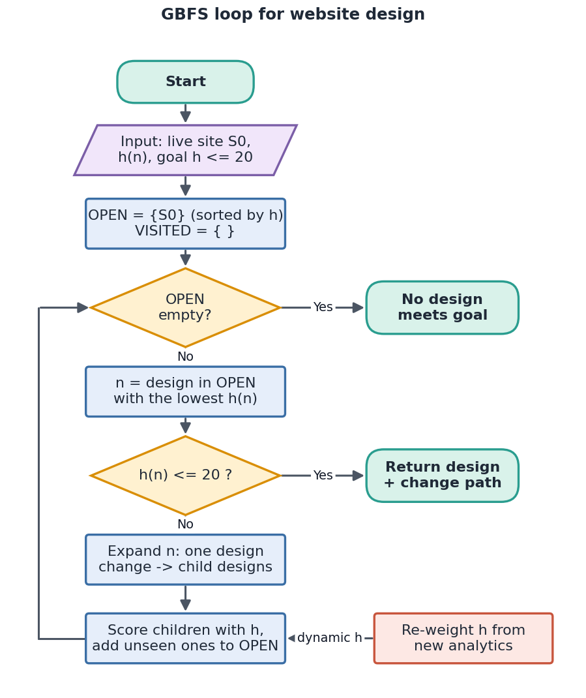
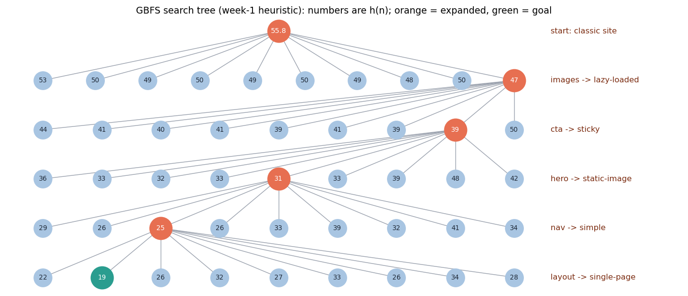
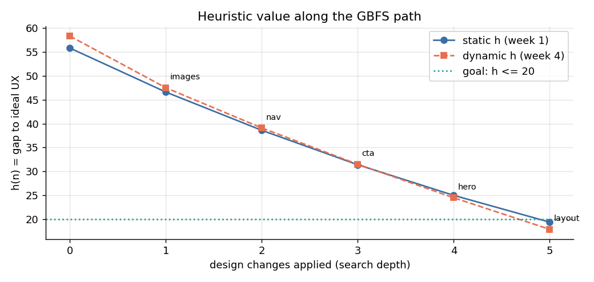
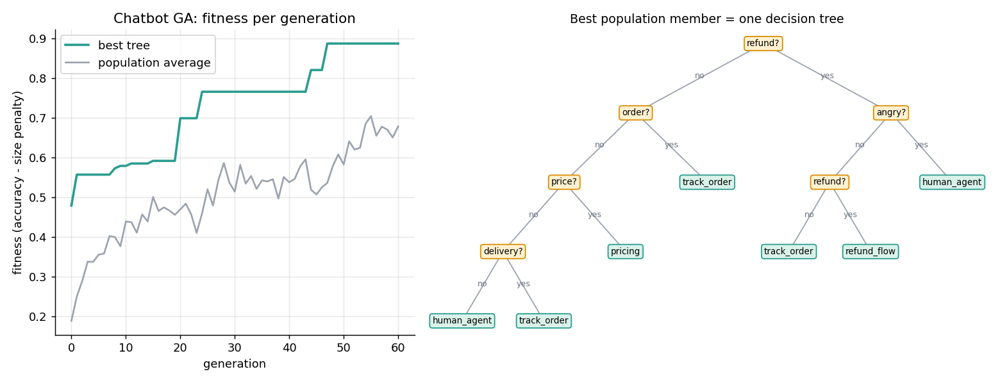
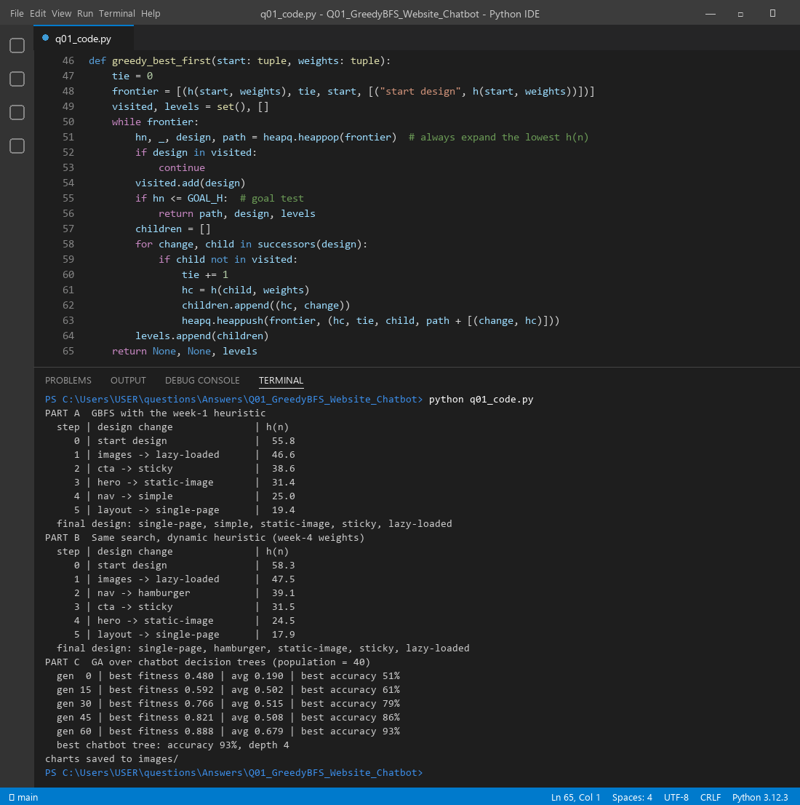

A website can be improved one change at a time: a new layout, simpler navigation, faster images. Each version of the site is a state. GBFS looks at all versions it can reach with one more change and always jumps to the one that looks closest to a great site. "Looks closest" is the job of the heuristic h(n). GBFS does not care how many changes it already made (it ignores path cost). It only asks: which version seems nearest to the goal right now?
| Search term | Meaning in website design |
|---|---|
| State / node | One complete version of the website (a choice for each of the 5 features) |
| Start state S0 | The current live website |
| Action (operator) | One design change, e.g. images → lazy-loaded |
| Node expansion | Listing every version reachable with one change (10 children per node here) |
| Traversal | The sequence of accepted changes, i.e. the redesign roadmap |
| Heuristic h(n) | Estimated gap between this version and an ideal site (lower is better) |
| Goal test | h(n) ≤ 20 (UX score ≥ 80) |
UX(n) = 100 × Σfeatures (wu·usability + ws·speed + wm·mobile) / (10 × 5) and h(n) = 100 − UX(n).
In week 1 the weights are w = (0.50, 0.30, 0.20). The option ratings (usability, speed, mobile) are:
| Feature | Option 1 | Option 2 | Option 3 |
|---|---|---|---|
| Layout | classic (5,6,4) | grid (7,6,6) | single-page (8,7,9) |
| Navigation | mega-menu (6,4,2) | simple (8,8,7) | hamburger (6,8,10) |
| Hero | slider (4,3,4) | static-image (7,8,7) | short-video (8,4,6) |
| CTA | none (2,10,5) | one-button (8,10,8) | sticky (9,9,9) |
| Images | heavy (6,1,2) | compressed (6,8,7) | lazy-loaded (7,10,9) |

function GBFS_WebsiteDesign(S0, h, goal_h):
OPEN ← priority queue ordered by h(n) # lowest h comes out first
OPEN.push(S0); VISITED ← { }
while OPEN is not empty:
n ← OPEN.pop_lowest()
if n in VISITED: continue
VISITED.add(n)
if h(n) ≤ goal_h: return n and its list of changes # goal test
for each single design change c in (layout, nav, hero, CTA, images):
child ← apply(c, n) # node expansion
if child not in VISITED: OPEN.push(child, h(child))
# optional: re-weight h from fresh analytics (dynamic heuristic)
return "no design reaches the goal"
Start: classic, mega-menu, slider, no CTA, heavy images, so h(S0) = 55.8. Take the first expansion as an example. Switching heavy images (6,1,2) to lazy-loaded (7,10,9) adds 0.5×1 + 0.3×9 + 0.2×7 = 4.6 raw points. That is +9.2 UX points, so h falls to 46.6. It is the biggest single drop, so GBFS picks it first.
| Step | Design change chosen by GBFS | h(n) | Why it was picked |
|---|---|---|---|
| 0 | start design | 55.8 | old site |
| 1 | images → lazy-loaded | 46.6 | biggest drop: speed jumps from 1 to 10 |
| 2 | CTA → sticky | 38.6 | best child in the new frontier |
| 3 | hero → static-image | 31.4 | slider was slow and weak |
| 4 | nav → simple | 25.0 | usability carries 50% weight |
| 5 | layout → single-page | 19.4 | h ≤ 20, so the goal is reached |
GBFS expanded only 5 nodes to reach the goal, out of 35 = 243 possible designs.

| Convergent (plain GBFS) | Divergent (creative extension) | |
|---|---|---|
| What it does | Always follows the single lowest-h version and narrows to one design | Keeps several promising versions alive and tries unusual changes |
| How | Pop the best node and stop at the goal | Keep the top-k (beam), add random or novel changes, start from several sites |
| Strength | Fast, cheap, clear roadmap | Finds designs that GBFS never looks at; gives the designer choices, not answers |
| Risk | Fixation: a misleading h leads to a so-so design | Slower, so it needs a creativity check (novelty + usefulness) |
In Figure 2 the blue nodes are the divergent pool and the orange path is the convergent choice. A good design process first diverges (many alternatives), then converges (pick, test, ship).
User behaviour changes, so the heuristic should change too. Suppose analytics show mobile traffic doubled by week 4. We move weight to mobile: w = (0.35, 0.25, 0.40). Running the same GBFS again gives a different order and a different final design: navigation becomes hamburger instead of simple, and it is chosen 2nd instead of 4th. In general ht(n) = Σ wi(t)·fi(n), where the weights wi(t) are updated from A/B tests, user feedback or a learning agent.

A chatbot is a set of conversation trees, for example a greeting tree, an orders tree and a refunds tree. Each node is a conversation state, and each child is the next question or reply. GBFS works the same way, with these changes:
Diagram 1 is a tree: a root question, then branches, then more branches, then leaves. That is exactly a chatbot decision tree. Internal nodes are tests on the user's message ("mentions refund?", "sounds angry?"), and leaves are replies (refund flow, track order, hand over to a human). A genetic algorithm can evolve a whole population of these trees:
population ← 40 random decision trees (depth ≤ 3)
repeat for G generations:
fitness(tree) = accuracy on sample chats − 0.003 × tree size
keep the 2 best trees (elitism)
while the new population is not full:
p1, p2 ← tournament_selection(population)
child ← subtree_swap(p1, p2) # crossover
with probability 0.3: child ← replace_random_branch(child) # mutation
return best tree
In our run, accuracy went from 51% to 93% in 60 generations. The best tree (Figure 4) learned rules such as "refund and angry → human agent" and "order → track order". One leftover quirk is visible: it asks "refund?" twice. Evolution keeps whatever works, so a cleanup step can simplify the tree afterwards.

The full program (q01_code.py) runs GBFS with both heuristics and the chatbot GA, and draws every chart in this answer.

Files in this folder: q01_code.py (source), q01_code.ipynb (Colab/Jupyter version, already run),
q01_output.txt (console output), images/ (all figures).